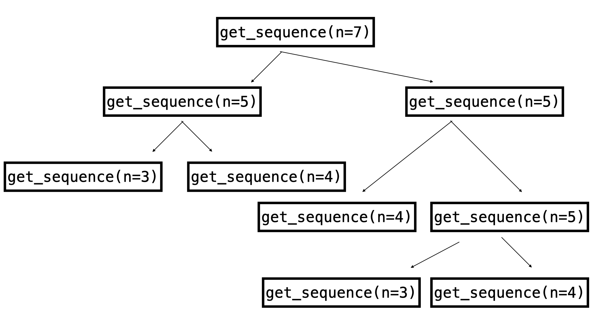

2023-11-17
In class today I we went over the Sequences chapter.
You can see a recording of the class here
Here is the notebook I used in class: sequences.ipynb
We started with the quiz which was won by Vincent
During the quiz we spent some time looking at this function which is defined recursively:
def get_sequence(n):
"""
...
"""
if n == 4:
return 1
if n in [1, 2, 3]:
return n
return get_sequence(n - 2) + get_sequence(n - 1)
During the discussion about what get_sequence(n=7) gives I drew the following
on the board:

If we work back from the end points of that image we get:
get_sequence(n=3)=3get_sequence(n=4)=1Which in turn gives:
get_sequence(n=5)=get_sequence(n=3) + get_sequence(n=4) = 3 + 1 = 4Which in turn gives:
get_sequence(n=6)=get_sequence(n=4) + get_sequence(n=5) = 4 + 1 = 5Which in turn gives:
get_sequence(n=7)=get_sequence(n=5) + get_sequence(n=6) = 5 + 4 = 9